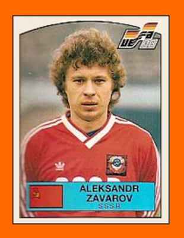

Le parole liberamente attribuite a Leonardo Cuéllar Rivera sono state ricostruite attraverso libri, interviste e altre fonti storiche, e sono tutte ispirate a fatti realmente accaduti.

Oleksandr Anatoliyovych Zavarov
Centrocampista, nato il 20 Aprile 1961 a Luhansk, Ucraina, URSS